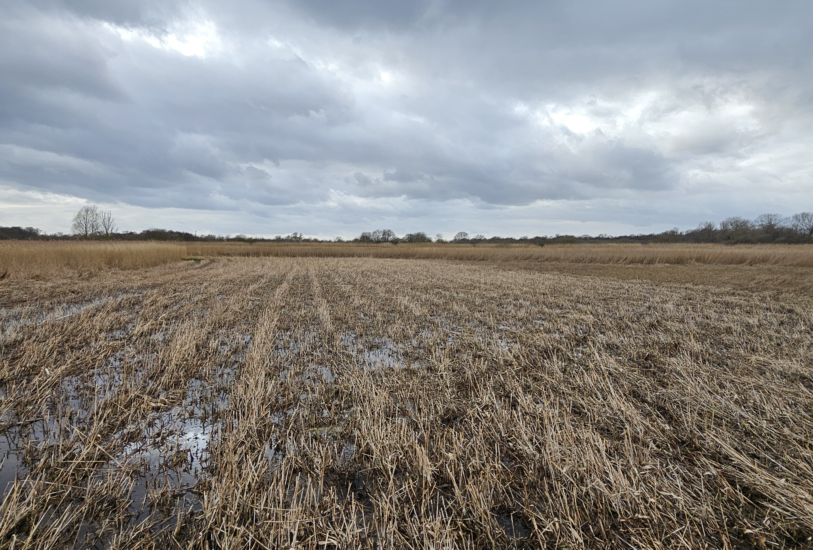

Transparent, repeatable, and built for peatlands and UK nature-based systems.
Carbon markets rely on trust — and trust requires evidence. Many platforms focus on ratings or
high-level emissions modelling. Cwiri is different. We build MRV from the ground up, combining
ecological rigour with modern data workflows to deliver monitoring that is transparent, repeatable,
field-ready, and project-specific.
Cwiri began as a response to a real, sector‑wide challenge. We came together for CivTech Challenge 10.6,
working with the Woodland Carbon Code and Peatland Code to explore how monitoring, modelling,
and verification could be made more efficient, transparent, and scalable. What started as a challenge
brief quickly became a shared mission: to build MRV tools that genuinely support nature‑based carbon
projects and reduce uncertainty in the places where it matters most.
The experience didn’t just give us a problem to solve — it shaped us into a company. Working directly
with the Codes exposed the practical barriers faced by project developers and verifiers, and it pushed
us to design systems that are both scientifically rigorous and operationally realistic. The challenge
clarified our purpose, sharpened our technical direction, and set the foundations for Cwiri’s commitment
to scalable, adaptive, science‑led MRV.
We build science‑led MRV that reflects how landscapes actually behave — transparent, adaptive, and grounded in real data.
Site‑specific scoping to understand landscape conditions, plan sensor placement, and integrate any existing datasets. This establishes a robust foundation for monitoring and modelling.
Low‑cost, code‑compliant sensors track soil moisture, soil temperature, water table depth, and peat motion. These measurements capture the day‑to‑day dynamics that drive carbon and hydrological change.
LoRaWAN and GSM workflows are designed for remote, restoration‑focused environments, ensuring reliable data delivery even in challenging landscapes.
Automated QA/QC, calibration, and gap‑filling workflows transform raw measurements into high‑quality datasets ready for analysis and modelling.
For the Woodland Carbon Code: empirical and process‑based carbon models (Q₁₀, RothC, ECOSSE).
For the Peatland Code: spatial interpolation, Sentinel‑1 water table mapping, and hydrological modelling.
Each pathway is tailored to the specific requirements of the Code.
Carbon flux estimates, net carbon balance, uncertainty analysis, and EO‑derived maps presented in a transparent, repeatable format that supports verification and long‑term project management.

Cwiri’s adaptive monitoring framework continuously evaluates how well your monitoring system reflects the real
behaviour of the landscape. Sensor placement, data quality, and model inputs are reassessed as new information
arrives, ensuring the system evolves alongside the site itself. As conditions shift — through restoration, seasonal
change, or unexpected events — the monitoring adapts in response, improving confidence and reducing risk over time.
This adaptive loop allows us to optimise where sensors are placed, refine model parameters, and integrate new data
sources as they become available. Instead of a static monitoring plan, you get a system that learns from the landscape,
strengthens its predictions, and delivers increasingly reliable insights year after year.
When you are ready, we keep onboarding straightforward. You can view the step-by-step process, then decide in your own time whether a short scoping call would be helpful.